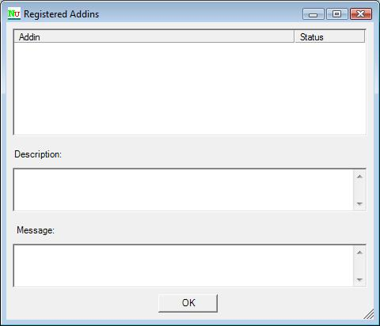

Addins Dialog
The Addins Dialog is displayed using the Tools | Addins menu item on the main menu. It lists all addins that have been found and loaded by NUnit.

Addin
This column lists the name of the addin, as defined by its author.
Status
This column shows the status of each addin. Possible values are
- Unknown
- Enabled
- Disabled
- Loaded
- Error
Description
If the author of an addin has provided a description, it is shown here when the addin is selected.
Message
If the addin failed to load, its status will be shown as Error and any error message displayed here when that addin is selected.